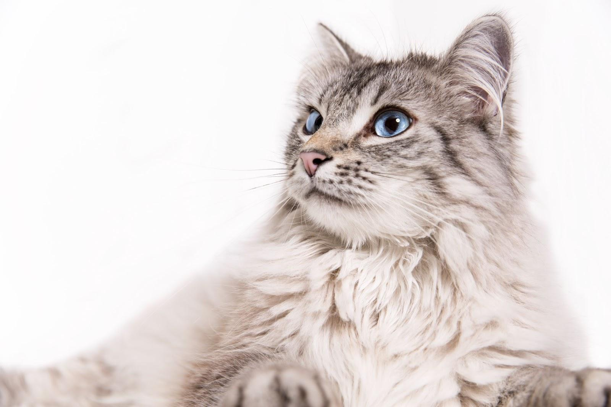
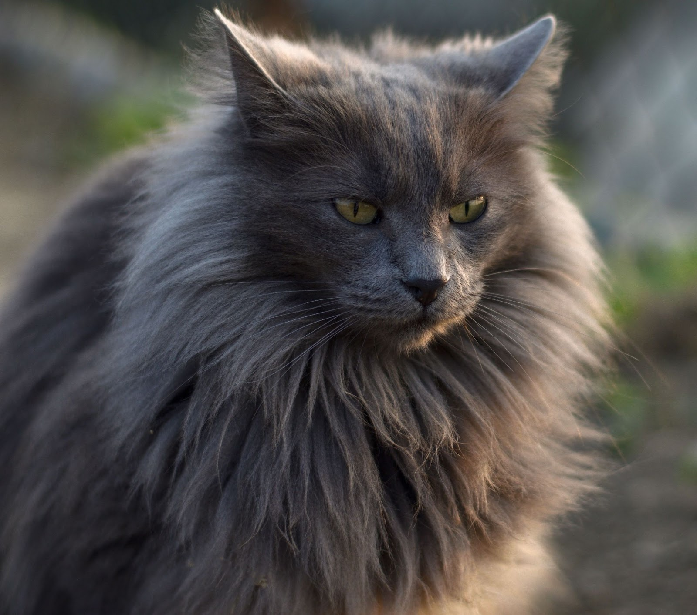

Домашняя длинношёрстная кошка — это кошка смешанного происхождения, то есть не принадлежащая к какой-либо признанной породе кошек. Длина шерсти варьируется от полудлинной до длинной.
 Длинношерстные
Преимущества и недостатки длинношерстных котиков
Преимущества:
- Мягкие
- Можно гладить!
- Милые
- Фоточки в инсте будут!
- Да просто кайф коты
- Глупо это отрицать!
Недостатки:
- Много шерсти
- Нужно вычёсывать
В заключение скажи, что длиношерстные коты оцениваются на 1010/10
Котёнок возится с клубком:
То подползет к нему тайком,
То на клубок начнет кидаться,
Толкнет его, отпрыгнет вбок...
Hикак не может догадаться,
Что здесь не мышка, а клубок.Агния Барто